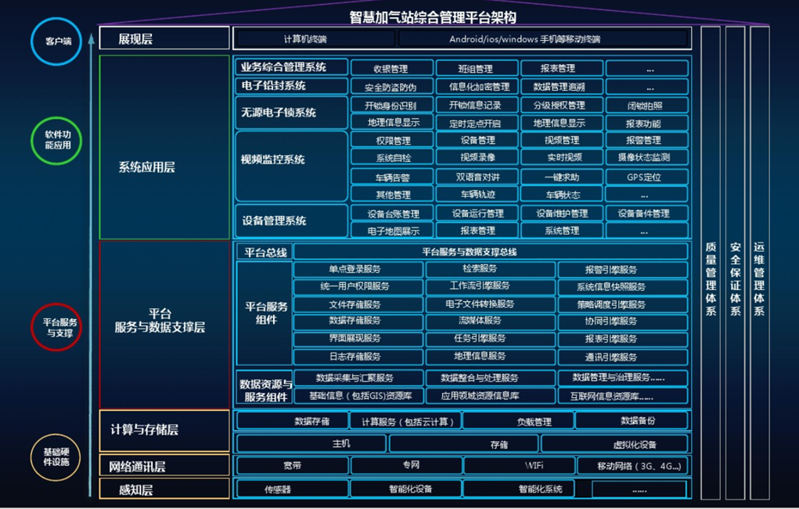
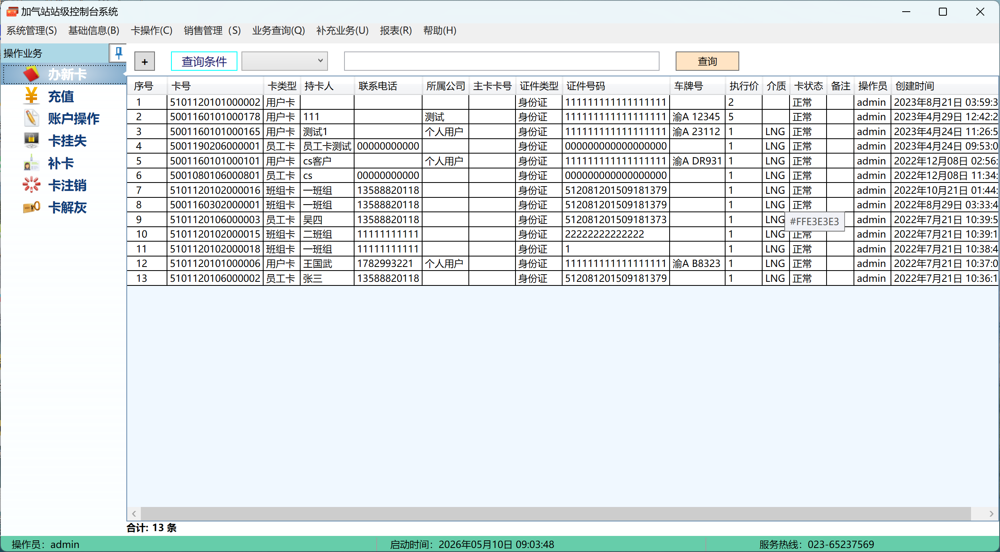

SCADA监控系统项目
加气站SCADA监控系统
2018 - 2023
技术栈：C++、QT、3D建模、实时通信、数据可视化
项目背景：构建SCADA监控系统，实现设备状态实时监控和虚拟仿真。
技术职责：
1. SCADA开发：使用QT开发SCADA监控界面，实现设备状态监控、报警系统、趋势分析；
2. 实时通信：开发高性能通信模块，实现实时数据采集和传输；
3. 数据可视化：开发数据可视化组件，支持多种图表和3D展示；
4. 系统集成：集成多种工业协议，实现异构系统的数据融合。
项目成果：降低设备故障率25%，提升运维效率40%，支持远程监控和预测性维护，实现了生产过程的数字化转型。
系统运行演示

系统界面展示


城市轨道交通供电安全管理系统
轨道交通供电安全管理系统
2022 - 2023
技术栈：WPF、Avalonia、Modbus TCP、S7 协议、多线程通信、视频监控集成
项目背景：集成数据采集、视频监控、开关控制、供电验电等功能，解决变电站周界长、五防安全控制繁琐、人防盲区大等问题。
职责描述：
1. 参与系统设计，负责WPF客户端与上位机核心开发；
2. 通过Modbus TCP协议采集变电站传感器数据，基于S7协议对接西门子S7-1500 PLC；
3. 优化多线程通信逻辑，避免界面阻塞，保障系统稳定运行。
更多图片展示
预留图片位置
可放置SCADA监控界面
预留图片位置
可放置数据可视化图表
预留图片位置
可放置报警系统界面
预留图片位置
可放置趋势分析图表